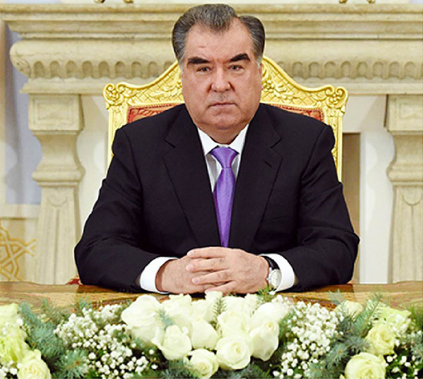

Сурати Президенти Ҷумҳурии Тоҷикистон
Ном ва Насаб
Эмомалӣ Раҳмон - Президенти Ҷумҳурии Тоҷикистон
Таваллуд
5 октябри соли 1952, ноҳияи Данғара, вилояти Хатлон
Мансаби Президентӣ
• 16 ноябри 1994 - аввалин интихоб
• 6 ноябри 1999 - бори дуввум
• 6 ноябри 2006 - бори сеюм
• 6 ноябри 2013 - бори чорум
• 11 октябри 2020 - бори панҷум
Таҳсилот
• 1971-1974 - Техникуми касабкории Кӯлоб
• 1982 - Донишгоҳи давлатии Тоҷикистон
• 1996 - Академияи хоҷагии халқи назди Ҳукумати Россия
Фаъолияти сиёсӣ
• 1990 - Раиси Шӯрои Вазирони ҶШС Тоҷикистон
• 1992 - Раиси Шӯрои Олии ҶТ
• 1994 - Президенти ҶТ
Ҷоизаҳо ва унвонҳо
• Қаҳрамони Тоҷикистон
• Қаҳрамони Федератсияи Россия
• Ордени "Ситораи Исмоили Сомонӣ"
• Ордени "Эл-юрт ҳурмати" (Ӯзбекистон)